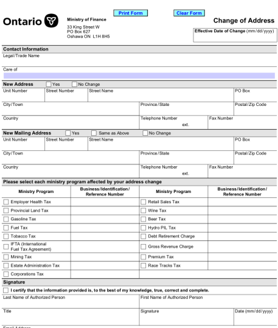
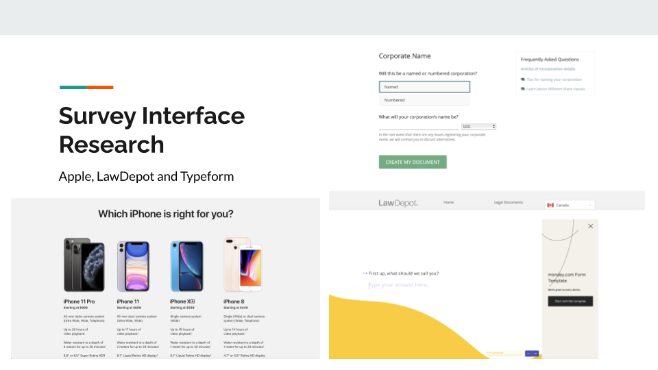
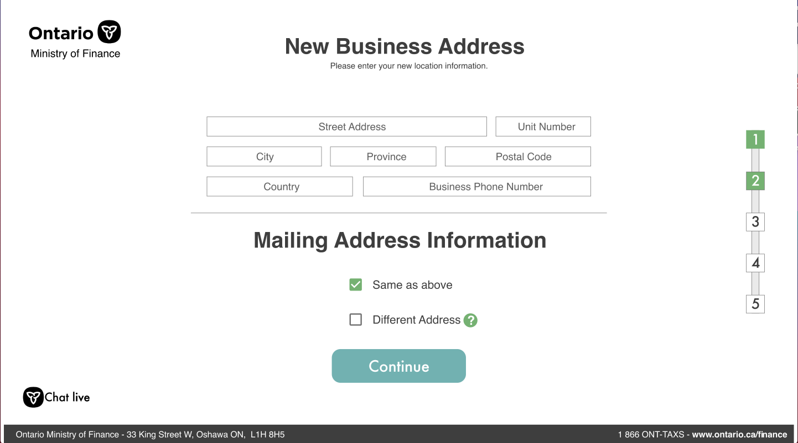

Tax Form Redesign
Background
During the Fall of 2019, my peers and I were given the opportunity to work with the Ontario Ministry of Finance. As a part of a design solutions course, we were required to help small businesses better understand their tax obligations. The overarching goal was to get small businesses to file taxes on time and decrease tax non-compliance.
Primary Research
Before redesigning the tax filing experience for small businesses we tried to cast a wide net in our research and then try to narrow down the scope. To start off the process, we tried to answer the question "Who are our users?". The answer was anyone.
As small businesses can be owned and operated by anyone, we needed to make sure this solution was universal and extremely accessible. In order to understand the major issues with the current system we conducted a series of interviews and surveys with small business owners. The key takeways were:
- Taxes are boring and tedious!
- Finding the correct form is very difficult
- Filling the forms was overcomplicated
- Currently, most business owners rely on an accountant
Objectives
Based on these findings and initial goals provided by the client we decided to scope down the project to three "How might we" statements:
- HMW make finding and filling forms feel easy and understandable?
- HMW reduce the number of blanks to be filled?
- HMW make it easier for small business owners to understand tax responsibility?
Form Redesign
Our deliverable to the ministry was a couple of redesigned forms that could provide a framework to simplify form filling for small business owners. One of the forms we worked on was the Change of Address form.
Origial form to file for change of address
This simple one page form currently looks overwhelming with a few redundant fields. While this form works well on paper it does not translate to digital filing.
Good design has a purpose. Ours was Familiarity
We based our redesign on common form based web-services. This provides the users with a sense of familiarity while filling out forms and reduces the 'fear' behind fulfilling their tax obligations.
Redesigned sample form
We also maximised the whitespace in an effort to help users focus on the task at hand and prevent an information overload. In an age where technology throws a ton of information at us on a daily basis, paying attention to detail becomes difficult and information is skimmed through. Empty space allows for focus therefore productivity, resulting in users believing that this task is easier and quicker.
Redesigned sample form 2
This survey design flow feels more time effective: the information isn't all combined on one page, which is overwhelming if people realise how many blank spaces they have to fill in. This design helps hide all the fields that need to be filled. We are serving information in smaller portions.
Next Steps
This project was a part of a University course thus the project ended in Dece,ber 2020 without any extensive user testing. This design was presented to the clients as well as the general public at the end of the course and was well received. The redesign was also pitched to the Ministry of Finance in March 2020 at the Program Policy and Analytics Branch's (PPAB) Data Lab event.
If the project is revisited at any stage, we have outlined a few steps that need to be taken before it is deployed to testing:
- Use this interface to recreate all tax related forms
- Use this interface to recreate the tax form search page
- Beta test with a larger user base